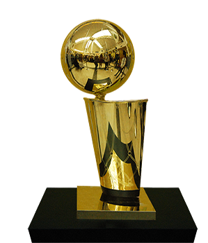
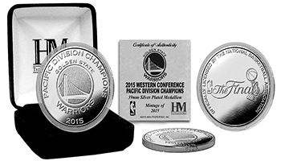
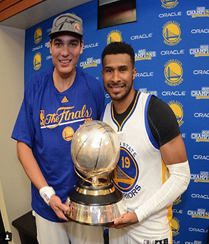

Campeonantos
Campeonatos NBA |
|  |
Os golden state Warriors já ganharam no total 4 campeonatos NBA (1947,1956,1975 e 2015) e são a 5ª equipa com mais vitorias em campeonatos da NBA. |
Títulos de Divisão |
|  |
Os golden state Warriors já ganharam 5 vezes a divisão do Pacifico em (1947, 1975, 1976, 2015, 2016) e neste momento estam em 1º da Divisão com 46 vitorias. |
Títulos de Conferência |
|  |
Os golden state Warriors já ganharam 8 vezes a conferência em (1947, 1948, 1956, 1964, 1967, 1975, 2015, 2016) |